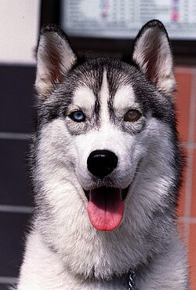
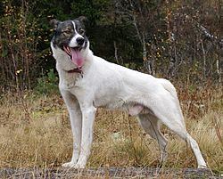
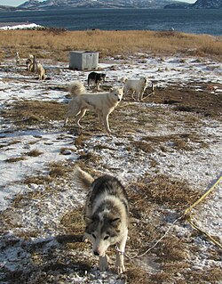
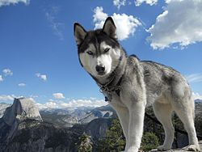

The term "husky" first came into usage in the mid to late 1700s. At this time, "Esquimaux" or "Eskimo" was a common term for pre-Columbian Arctic inhabitants of North America. Several dialectal permutations were in use including Uskee, Uskimay and Huskemaw. Thus, dogs used by Arctic people were the dogs of the Huskies, the Huskie's dogs, and eventually simply the husky dogs. Canadian and American settlers, not well versed on Russian geography, would later extend the word to Chukotka sled dogs imported from Russia, thus giving rise to the term Siberian husky.
Nearly all dogs' genetic closeness to the gray wolf is due to admixture. However, several Arctic breeds also show a genetic closeness with the now-extinct Taimyr wolf of North Asia due to admixture: the Siberian Husky and Greenland Dog (which are also historically associated with Arctic human populations) and to a lesser extent, the Shar Pei and Finnish Spitz. An admixture graph of the Greenland Dog indicates a best-fit of 3.5% shared material; however, an ancestry proportion ranging between 1.4% and 27.3% is consistent with the data and indicates admixture between the Taimyr wolf and the ancestors of these four high-latitude breeds.
Huskies are energetic and athletic. They are distinguished by their hardiness and cold-weather tolerance, in contrast to many modern sprint sled dogs derived from hound and pointer crossbreeds and purebred sprinting dogs which do not have or retain these qualities. Likewise, they are distinguished from laika, as they were not developed for the primary purpose of hunting game and prey animals.
The most commonly used dog in dog sled racing, the Alaskan husky is a mongrel bred specifically for its performance as a sled dog. The modern Alaskan husky reflects 100 years or more of crossbreeding with English Pointers, German Shepherd Dogs, Salukis and other breeds to improve its performance. They typically weigh between 18 and 34 kg (40 and 75 lb) and may have dense or sleek fur. Alaskan huskies bear little resemblance to the typical husky breeds they originated from, or to each other.
The Labrador Husky originated in the Canadian region of Labrador. The breed probably arrived in the area with the Inuit who came to Canada around 1300 AD. Despite the name, Labrador huskies are not related to the Labrador retriever, but in fact are most closely related to the Canadian Eskimo Dog. There are estimated to be 50-60 Labrador huskies in the world.
The Siberian Husky is smaller than the similar-appearing Alaskan Malamute. They are descendants of the Chukotka sled dogs bred and used by the native Chukchi people of Siberia, a people of Paleosiberian origin, around the year 2000 BC. Imported to Alaska in the early 1900s, they were used as working dogs and racing sled dogs in Nome, Alaska throughout the 1910s, often dominating the All-Alaska Sweepstakes. They later became widely bred by recreational mushers and show-dog fanciers in the U.S. and Canada as the Siberian Husky, after the popularity garnered from the 1925 serum run to Nome. Siberians stand 20-23.5 inches, weigh between 35 and 60lbs (35-50 for females, 45-60 for males), and have been selectively bred for both appearance and pulling ability. They are still used regularly today as sled dogs by competitive, recreational, and tour-guide mushers.
